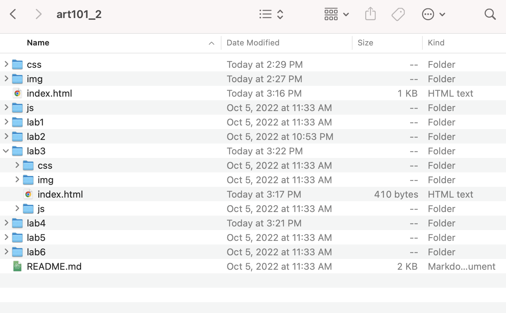
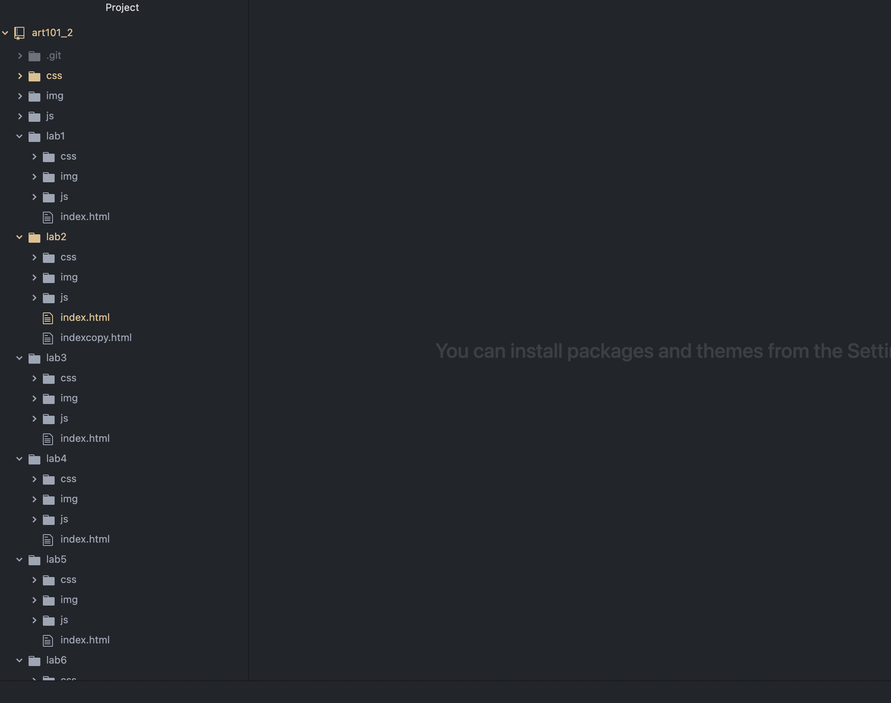
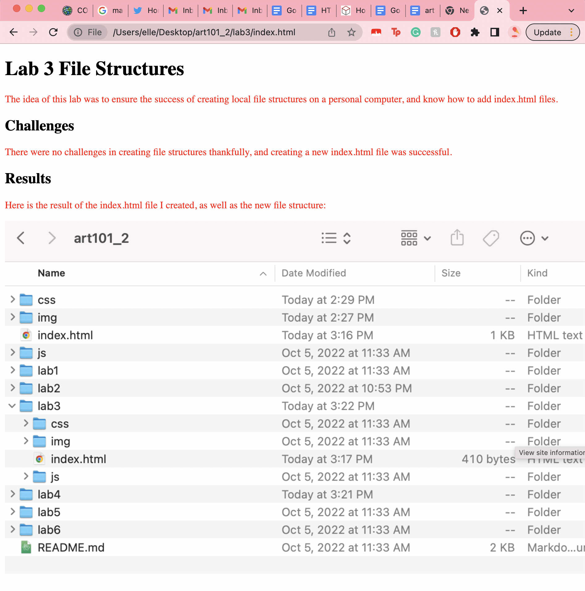

The idea of this lab was to ensure the success of creating local file structures on a personal computer, and know how to add index.html files.
There were no challenges in creating file structures thankfully, and creating a new index.html file was successful.
Here is the result of the index.html file I created, as well as the new file structure:
Screenshot of the project file structure in Atom & screenshot of art101_2/index.html as it appears in browser:
Screenshot of art101_2/lab3/index.html as it appears in browser:
